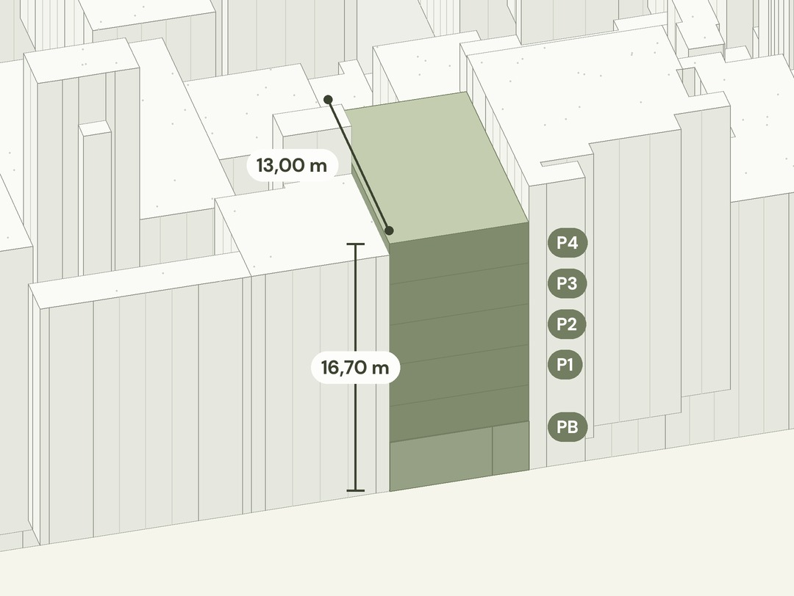
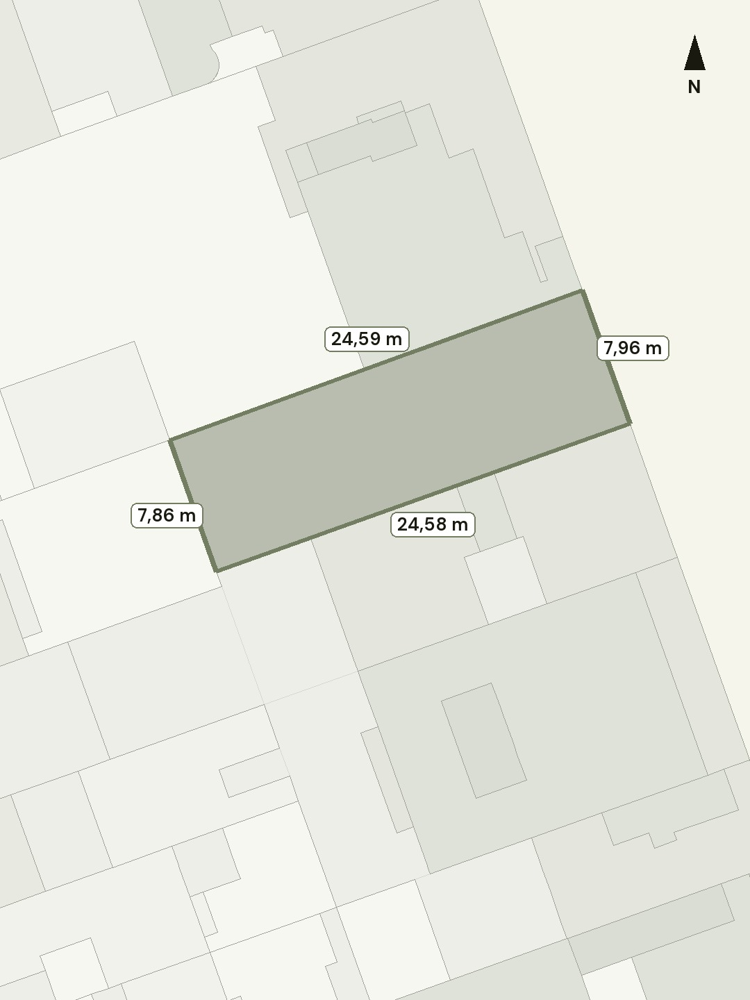
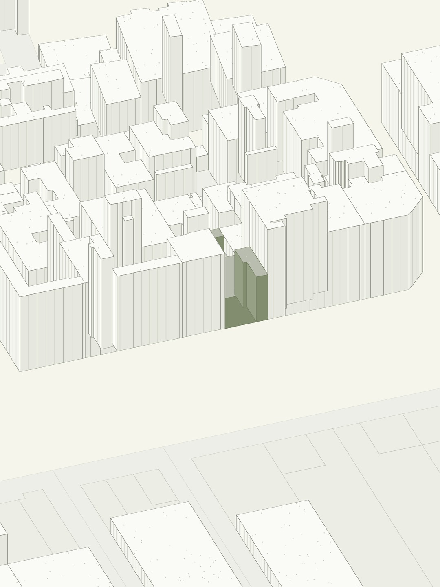

Vídeo-informe del teu punt
Un vídeo informatiu amb les dades urbanístiques bàsiques de la teva ubicació: alçada, plantes, sostre màxim, habitatges i usos, cadascuna amb la seva font oficial.
Urbanisme clar, en 3D
Alçada, plantes, metres construïbles, habitatges i usos del teu solar, parcel·la o immoble, amb dades oficials i explicat en un vídeo 3D. Comencem zona a zona: si la teva encara no està disponible, t'avisem. El vídeo-informe és informatiu i costa 19 € (IVA inclòs). GRATIS fins al 20 de novembre.
Com funciona
Sobre el plànol, o ens dones l'adreça o la referència cadastral.
Amb la seva geometria oficial del Cadastre: la parcel·la exacta, mai la del costat.
El planejament vigent d'aquell lloc, article per article.
Un vídeo 3D amb el que permet la norma, fàcil d'entendre.
Cas real
Un solar entre mitgeres de 194,45 m² en sòl urbà. Amaguem l'adreça per protegir-ne el propietari.



Cada dada porta la seva font i el seu article. El vídeo-informe inclou també l'emplaçament, els veïns, la connectivitat i els plans que afecten la parcel·la.
Demana el teu vídeo-informeQuè reps
Un vídeo informatiu amb les dades urbanístiques bàsiques de la teva ubicació: alçada, plantes, sostre màxim, habitatges i usos, cadascuna amb la seva font oficial.
El vídeo-informe és informatiu. L'anàlisi completa de la teva ubicació és aquest informe: alternatives comparades, casos especials i les conclusions, revisades per un arquitecte col·legiat.
Avantprojecte, quant costa construir-lo, quant val i si surt a compte.
Si decideixes tirar endavant, el mateix equip d'arquitectes redacta el projecte i dirigeix l'obra.
Cadastre i planejament vigent, consultats en el moment.
Tot és verificable: sabràs d'on surt cada número.
Revisen l'informe complet abans de lliurar-lo.
Demana el teu vídeo-informe